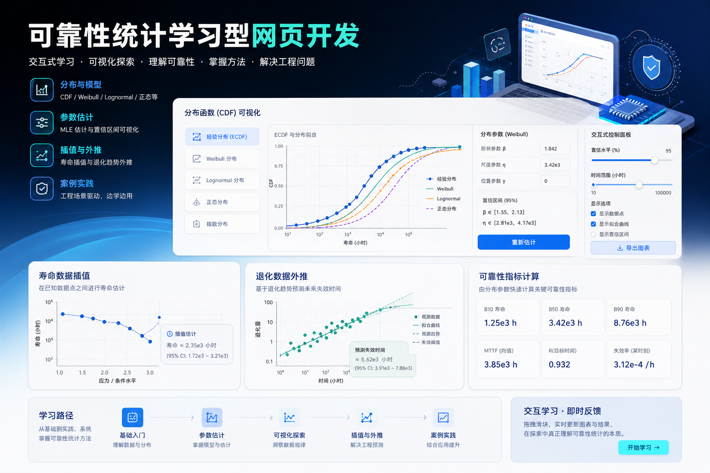

Physics-Informed ML
灰箱 PINN 寿命预测工作台
回答一个问题：测出来的应力数据，外推到使用工况能活多久、有多可信。物理骨干 + NN 残差 + 不确定度 + 域检查，输出永远是 diagnostic。



当前进展
四种形态已建：Windows EXE、Streamlit 应用、REST 服务（OpenAPI）、纯静态公网版。40 项测试通过。当前缺口：≥2 电压、≥2 温度、Vg>0 的约 30 DUT 真实多条件数据。
红线：预测必须带不确定度区间与训练域检查；知识字典典型区间为占位参考，正式使用前必须按器件族校准。